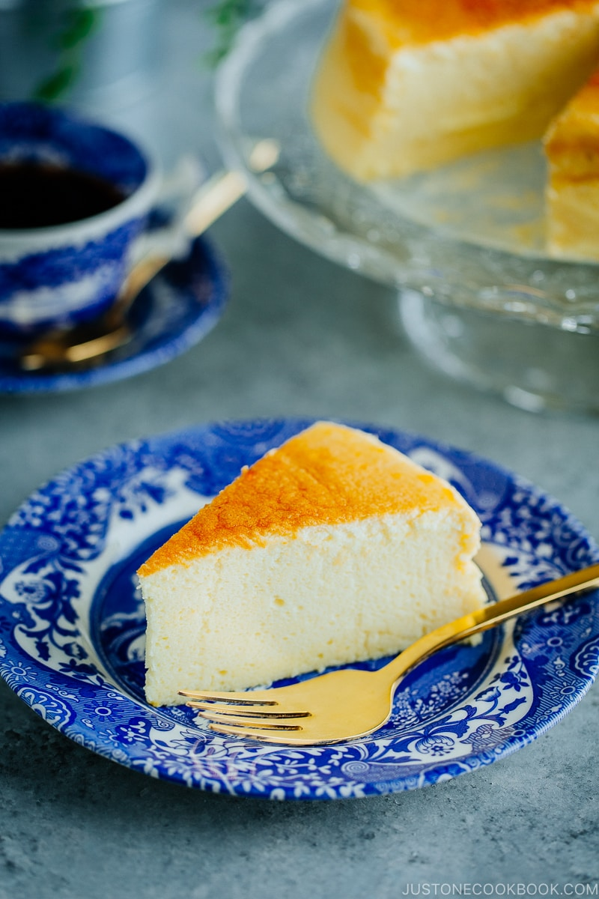

Japanese Cheesecake

Ingredients
- Unsalted butter: >1 tbsp
- Eggs: 6 large
- Cream Cheese: 10.6 oz
- Heavy Whipping Cream: 3/4 cup
- Granulated Sugar: 4 1/2 tbsp
- Cake Flour: 2/3 cup
- Lemon juice: 2 tbsp
- Apricot Jam: 2 tbsp
Instructions
Preparation
- Line the inner surface of the baking pan with parchment paper
- Preheat the oven to 350F (180C)
- Set a medium saucepan filled with 2 inches of water and bring to a simmer
- Separate the egg yolks from the whites and refrigerate the egg whites.
Batter
- In a large bowl, cream together cream cheese, unsalted butter, heavy whipping cream, and grnulated sugar
- Place mixture over double boiler and blend until smooth
- Whisk 6 egg yolks into mixture. Blend well.
- Sift cake flour into batter. Whisk and blend together
- Add in lemon juice
- In a separate bowl, whisk together the egg whites
- Slowly add granulated sugar while whisking
- Continue beating egg whites until they reach stiff peaks
- Take one third of the egg white mixture and fold gently into the cream cheese mixture
- Pour the cream cheese mixture back into the egg whites bowl and gently fold the mixtures together
- Pour the mixture into the cake pan
- Bake at 320F (160C) for 70-75 minutes
- Reduce the oven temperature and bake for another 10 minutes at 300F or 150C
Serving
- Turn off the oven and leave the door ajar for 15-20 minutes to allow the cake to cool
- Remove the cake from the pan and remove the parchment paper from the sides
- Brush apricot jam over the top of the cake
- Serve cake at room temperature
Back to homepage